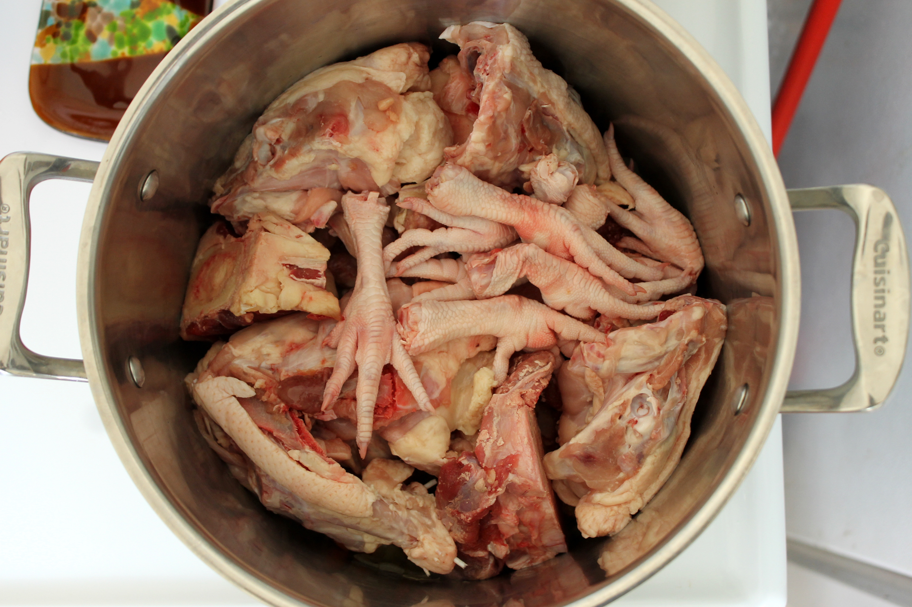

Choose a mix of marrow bones, knucklebones, and meaty bones (like beef, chicken, or pork). The variety adds both flavor and nutrients.

2. Cleaning the Bones by Boiling (Optional but Recommended)
Boil the bone with a cup of concentrated alcohol to get rid of any excessive fat and impurities.
3. Add Aromatics
Place bones in a large pot or slow cooker. Add onions, carrots, celery, garlic, and herbs (like bay leaves, parsley, or thyme). One tea spoon of apple cider vinegar helps draw minerals out of the bones.(Optional)
4. Add Water
Fill the pot with enough water to cover the bones and vegetables by about 2–3 inches. Bring to a gentle boil, and then reduce to a simmer. Skim off any foam that rises to the top. If you want to add some sweetness to the broth, you can also add two to three dry dates or figs.
5. Simmer Slowly
Simmer for 12–24 hours for beef bones, or 6–12 hours for chicken. The long cooking time extracts collagen, calcium, and rich flavor. Add more water if needed to keep bones submerged.
6. Last adjustments & Store
The soup can be enjoyed by adding salt for taste. If you want to store the soup, allow it to become cool and strain, then store in jars in the refrigerator (up to 5 days) or freezer (up to 3 months).